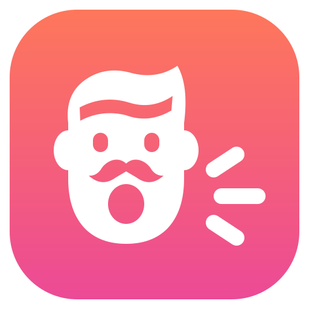

Know you're heard.
Ciao is the easiest way to talk to your computer. Your words appear while you are still speaking, so you see what it heard — and catch the one word that flips the meaning before it lands in your prompt.
Free and open source · runs on the OpenAI API
- Live, not after the fact New words fade in bright and settle to grey, about 0.8 s after you say them.
- Hold a key, or just say "ciao" Push to talk on Right Ctrl, or turn on the wake word and start hands-free with your voice.
- Pastes where you started The text lands in the window you were typing in. Nothing is lost if the network drops.
Powered by OpenAI
Ciao hears you through OpenAI's gpt-live-transcribe, one of the best speech-to-text models there
is. It runs on your own OpenAI API key, so you pay OpenAI directly at their list price. No subscription, no
middleman.
- ~$1
- per hour of recording
- $0
- between dictations
- $0
- for Ciao itself